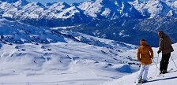
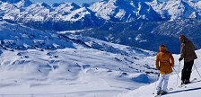
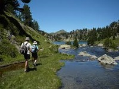
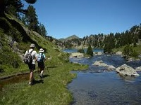
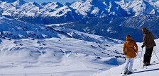
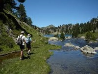

 

El Valle de Arán (en catalán: (la) Vall d'Aran; oficialmente en aranés: (era) Val d'Aran), o simplemente Arán, es una comarca española situada en la vertiente septentrional de los Pirineos centrales, en la provincia de Lérida, comunidad autónoma de Cataluña. En ella conviven tres lenguas oficiales: el español, el aranés —dialecto del occitano gascón— y el catalán.
Limita al norte con Francia (departamento de Alto Garona), al suroeste con la comarca aragonesa de la Ribagorza, Huesca, al sur con la comarca de Alta Ribagorza, Lérida, y al este con la de Pallars Sobirá, Lérida. Cuenta con 10 372 habitantes (INE 2021) y su capital es Viella, sede de su gobierno autónomo propio, el Consejo General de Arán. (ref:wikipedia)
Esta página web quiere presentar las diferentes actividades que se pueden realizar en la Vall d'Aran. Presenta cada una de las actividades y muestra toda una serie de enlaces para porfundizar en cada una de las actividades según el interés del visitante de la web.

